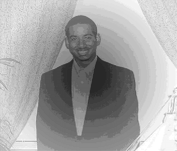
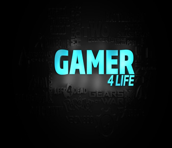
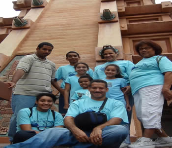

Joshua Peralta

Hi, my name is Joshua Peralta. I was born in Puerto Rico, March 23 1994, and lived there for 12 years, although my family has been there since 1984. When I started school, I started at home, with the home-schooling program, with my mother as teacher. I've been home-schooled my whole life, up till I enter college. In 2006 we moved to Orlando Florida and have been living there ever since. I was still home-schooled, but in high school I joined the online FLVS and then Connexus home-schooling programs. In March 22, 2009 I got baptized and became a Christian. When I finished High School at 18, I went to college in Valencia. That was my first experience of taking classes out of my house by me. I've never been the type of person to socialize, so this was quite something new. Although I'm much of a nerd guy, you can always or mostly find me in the computer or on my gaming consoles. I did alright on the first semester, getting myself up in the Dean's Honor Students. Now I'm about to finish second semester with this site as my first Final.
If you would like to keep in touch with me for more information or other things, here are a few of my accounts listed. For more, email me.
TRU Kid

I don't want to grow up, I'm a Toys' R Us kid
There's a million toys at Toys 'R Us that I can play with!
From bikes, to trains, to video games,
It's the biggest toy store there is! Gee whiz!
I don't want to grow, cuz baby if I did,
I wouldn't be a Toys 'R Us kid!
These are the famous lyrics to the song made by Toys "R" Us. I have always thought of myself as a Toys "R" us kid, and I have never wanted to grow up. By this I don't mean that I want to be in the toy store all the time and play with their toys, but by the fact that I want to enjoy life, play games, and have fun. For as long as I can remember I've been like this and I still am. The two things that open my mind into games were the good old classic Super Nintendo and the Pokémon and/or Yu-Gi-Oh! Trading Card Game. As the gaming companies grew so did every kid that wanted a gaming console or handheld. My first console was the Super Nintendo, one of everyone's favorite. As I grew and new consoles came, I wanted to get whichever was possible economically and fun to have. By the time I got to Florida, I decided to take gaming seriously and make it into my main hobby for fun, along with making videos, websites, forums, games, TCG, and more. The second one which is the Trading Card Game, has really taken something into me, I love card games and love making card games. My favorite card games are Yu-Gi-Oh! and Cardfight Vanguard and would play them anytime anywhere. All the different artworks and strategies that one can do in the matches are really fun, plus collecting them. Although I'm growing up and becoming an adult, I want to keep the kid inside of me that loves to play games. Others can do it, why can't I? I'm a Gamer 4 Life!
Of course, we always have to remember to put priorities.
Ohana Means Family

In the movie of Lilo & Stitch we got the line that says Ohana means family, and family means nobody gets left behind. My family is one of the things I give a lot of priority, I have always been close to my family and even more since I was home-schooled. I love my family so much that I have sacrifice parties, invitations, and many fun things to do, just to spend time with my family. Since I always lived in a Christian family, we always try to help each other in the right away. My parents have always been there to help me and support me in life, which is something I'm grateful for. I also love spending time with my brothers and sisters, we always play together as a family. But one of my favorite things to do with the family is watching movies at home, that gets everyone so close somehow, and also when we go to Disney parks. Long Live Ohana!